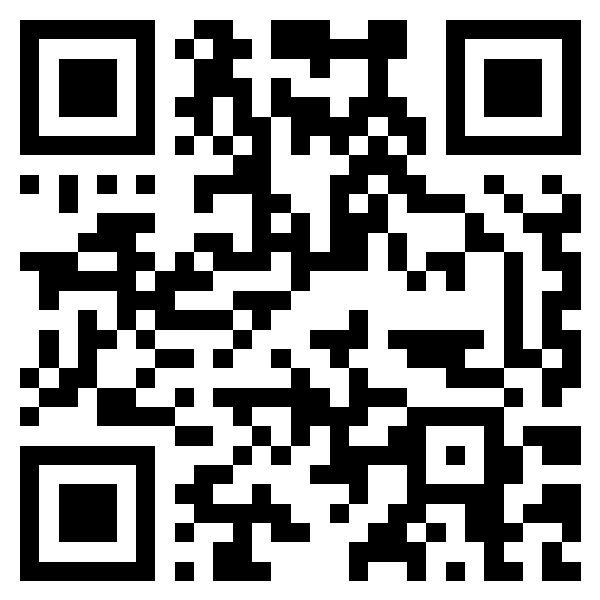

Akyıldız Lojistik · Sevkiyat 🚚
Şoför Paneli — Hızlı Kullanım Rehberi
Telefonla sevkiyat.akyildizlojistik.com · Şoför rolüyle giriş → otomatik şoför ekranı

OKUT → UYGULAMAYI AÇ
1 · Sefere Başlama (QR ile)
1
📍
Konum İznini Aç
Uygulama açılınca konum izni ister. İzin Ver deyin — GPS olmadan sefer başlatılamaz.
2
🔳
QR Butonuna Bas
Alt menüdeki ortadaki mavi QR butonuna dokunun, Sefer Başlat sekmesini seçin.
3
🚛
Araç QR'ını Okut
Araçtaki QR kodu kameraya tutun. Çıkan plakayı kontrol edin ve onaylayın.
4
📄
İrsaliye QR'ını Okut
Araçtaki sevkiyatlardan herhangi birinin irsaliye QR'ını okutun. Sefere dahil sevkiyatlar listelenir → onaylayın.
5
📷
Kilometre + Fotoğraf
Başlangıç km'sini girin ve kadran fotoğrafı çekin. Seferi Başlat'a basın.
2 · Teslimat / Rota
✅ Bir Durağı Teslim Etme
- Ana sekmesinde sıradaki durağa dokunun. Rota butonu Google Haritalar'da yol tarifini açar.
- Durakta Ara ile müşteriyi arayabilir, adrese navigasyon başlatabilirsiniz.
- İlgili irsaliyede Teslim Alan Kişi adını yazın (varsa hazır gelir).
- En az 1 teslim fotoğrafı çekin (en çok 5). İsterseniz not ekleyin.
- "Teslim Edildi Olarak İşaretle" butonuna basın. Durak yeşile döner.
↩️ Eksik / Hasarlı → İade
- Teslim edilemeyen veya geri dönen ürünler için durak ekranında İade'yi açın.
- İade sebebini seçin: Hasarlı, Yanlış/Eksik/Fazla Ürün, Müşteri İptali, Diğer.
- Gerekirse açıklama yazıp iadeyi kaydedin — depo tarafında otomatik işlenir.
Not: Üst şeritteki sayaç (Tamamlanan / İrsaliye) ilerlemenizi gösterir.
3 · Seferi Kapatma
1
🟢
Hepsi Tamamlanınca
Tüm teslimatlar bitince yeşil bir uyarı çıkar ve ortadaki QR butonu yeşile döner.
2
🚛
Araç QR'ını Okut
Yeşil QR butonuna basın, aynı aracın QR kodunu tekrar okutup onaylayın.
3
📷
Bitiş Km + Fotoğraf
Bitiş kilometresini girin, kadran fotoğrafını çekin.
4
🏁
Seferi Bitir
"Seferi Bitir"e basın. Sefer süreniz kaydedilir ve sefer kapanır.
i
🔁
Erken Kapatma
Gerekirse Diğer → Seferi Kapat (QR) menüsünden de kapatabilirsiniz.
4 · Teslim Edilmiş Bir Projeye Sonradan Not Ekleme
Bir durağı teslim ettikten sonra ek bilgi (eksik kalan, müşteri talebi, açıklama vb.) yazmak isterseniz:
1Alt menüden Tamamlanan sekmesine geçin.
2İlgili teslim edilmiş durağa dokunun.
3Açılan ekranda irsaliye kartına dokunarak detayını genişletin.
4✏️ Not Ekle butonuna basın.
5Notu yazıp Kaydet'e basın — anında kaydedilir.
Alt Menü Ne İşe Yarar?
🏠AnaBugünün rotası ve duraklar
🗺️RotaHaritada çoklu durak yolu
🔳QRSefer Başlat / Kapat
✔️TamamlananTeslim edilen duraklar
⋯DiğerAyarlar · İzinler · Çıkış
Önemli İpuçları
Konum izni şart: kırmızı uyarı çıkarsa Diğer → İzinler & Ayarlar'dan açın.
İnternet yoksa teslimatlar telefonda kaydedilir, bağlantı gelince otomatik gönderilir.
Sefer açık değilken teslim listesi pasiftir — önce QR ile sefer başlatın.
QR ortadaki buton yalnızca sefer başında ve sonunda aktiftir; teslimat sırasında griye döner.
Sırayı düzenle: durakları kendi gitme sıranıza göre yukarı/aşağı taşıyabilirsiniz.
Fotoğraf zorunlu: teslim ve km kadranı için fotoğrafsız işlem tamamlanmaz.